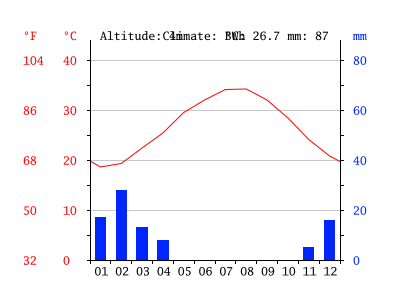

Due to the fact that Dubai is a desert, the temperature is generally very hot.
Dubai has two main seasons, Winter and Summer.
During the summer it can reach temperatures of up to 50°C. In summer, it is very humid
making it very unpleaseant. This is further exaggerated by the windy weather during the summer,
which can cause frequent sandstorms and dust storms.
During the winter season, the temperature can go to as low as 9°C,
which isn't very low, but is low
temperatures for Dubai. In Dubai, the chance of rain is very low except during the
Winter season. During this season, the chance of rain is much higher, but it
is still not extremely common to see rain. Also, thunderstorms and lightning can also be observed.
In Dubai, seeing snow or hail is very unlikely, however,
in other Emirates, snow and hail do occur, although rarely.
